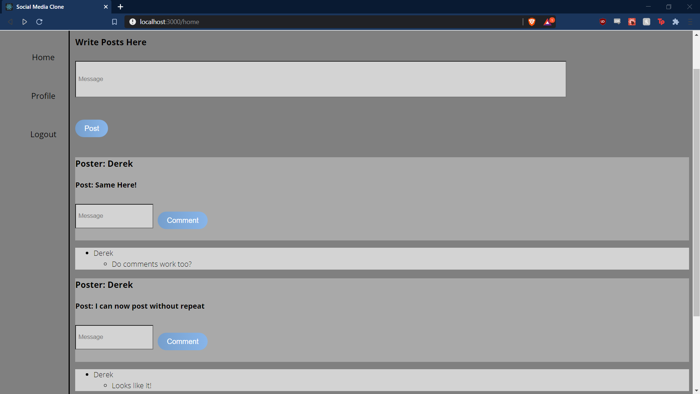

Blog Site
A basic blog site that was inspired by twitter. Displays a vertical menu and has built in authorization and authentication. User can make and comment on posts if they are logged in. Has a backend API designed and implemented using MongoDB, ExpressJS and NodeJS. This was the last project I did before commiting to better my CSS, which is obvious by the bland layout.
The Blog Site is not currently hosted on any service. This was one of my first solo projects and I did not fully understand how to host full stack applications during this period. The code for this project can be found on my github or by following this link!
